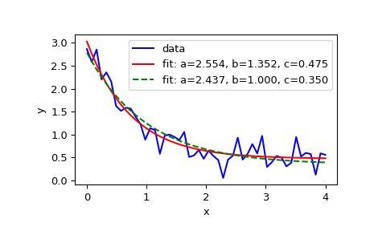

scipy.optimize.curve_fit¶
-
scipy.optimize.curve_fit(f, xdata, ydata, p0=None, sigma=None, absolute_sigma=False, check_finite=True, bounds=(-inf, inf), method=None, jac=None, **kwargs)[source]¶ Use non-linear least squares to fit a function, f, to data.
Assumes
ydata = f(xdata, *params) + eps.- Parameters
- fcallable
The model function, f(x, …). It must take the independent variable as the first argument and the parameters to fit as separate remaining arguments.
- xdataarray_like or object
The independent variable where the data is measured. Should usually be an M-length sequence or an (k,M)-shaped array for functions with k predictors, but can actually be any object.
- ydataarray_like
The dependent data, a length M array - nominally
f(xdata, ...).- p0array_like, optional
Initial guess for the parameters (length N). If None, then the initial values will all be 1 (if the number of parameters for the function can be determined using introspection, otherwise a ValueError is raised).
- sigmaNone or M-length sequence or MxM array, optional
Determines the uncertainty in ydata. If we define residuals as
r = ydata - f(xdata, *popt), then the interpretation of sigma depends on its number of dimensions:A 1-D sigma should contain values of standard deviations of errors in ydata. In this case, the optimized function is
chisq = sum((r / sigma) ** 2).A 2-D sigma should contain the covariance matrix of errors in ydata. In this case, the optimized function is
chisq = r.T @ inv(sigma) @ r.New in version 0.19.
None (default) is equivalent of 1-D sigma filled with ones.
- absolute_sigmabool, optional
If True, sigma is used in an absolute sense and the estimated parameter covariance pcov reflects these absolute values.
If False, only the relative magnitudes of the sigma values matter. The returned parameter covariance matrix pcov is based on scaling sigma by a constant factor. This constant is set by demanding that the reduced chisq for the optimal parameters popt when using the scaled sigma equals unity. In other words, sigma is scaled to match the sample variance of the residuals after the fit. Mathematically,
pcov(absolute_sigma=False) = pcov(absolute_sigma=True) * chisq(popt)/(M-N)- check_finitebool, optional
If True, check that the input arrays do not contain nans of infs, and raise a ValueError if they do. Setting this parameter to False may silently produce nonsensical results if the input arrays do contain nans. Default is True.
- bounds2-tuple of array_like, optional
Lower and upper bounds on parameters. Defaults to no bounds. Each element of the tuple must be either an array with the length equal to the number of parameters, or a scalar (in which case the bound is taken to be the same for all parameters). Use
np.infwith an appropriate sign to disable bounds on all or some parameters.New in version 0.17.
- method{‘lm’, ‘trf’, ‘dogbox’}, optional
Method to use for optimization. See
least_squaresfor more details. Default is ‘lm’ for unconstrained problems and ‘trf’ if bounds are provided. The method ‘lm’ won’t work when the number of observations is less than the number of variables, use ‘trf’ or ‘dogbox’ in this case.New in version 0.17.
- jaccallable, string or None, optional
Function with signature
jac(x, ...)which computes the Jacobian matrix of the model function with respect to parameters as a dense array_like structure. It will be scaled according to provided sigma. If None (default), the Jacobian will be estimated numerically. String keywords for ‘trf’ and ‘dogbox’ methods can be used to select a finite difference scheme, seeleast_squares.New in version 0.18.
- kwargs
Keyword arguments passed to
leastsqformethod='lm'orleast_squaresotherwise.
- Returns
- poptarray
Optimal values for the parameters so that the sum of the squared residuals of
f(xdata, *popt) - ydatais minimized.- pcov2-D array
The estimated covariance of popt. The diagonals provide the variance of the parameter estimate. To compute one standard deviation errors on the parameters use
perr = np.sqrt(np.diag(pcov)).How the sigma parameter affects the estimated covariance depends on absolute_sigma argument, as described above.
If the Jacobian matrix at the solution doesn’t have a full rank, then ‘lm’ method returns a matrix filled with
np.inf, on the other hand ‘trf’ and ‘dogbox’ methods use Moore-Penrose pseudoinverse to compute the covariance matrix.
- Raises
- ValueError
if either ydata or xdata contain NaNs, or if incompatible options are used.
- RuntimeError
if the least-squares minimization fails.
- OptimizeWarning
if covariance of the parameters can not be estimated.
See also
least_squaresMinimize the sum of squares of nonlinear functions.
scipy.stats.linregressCalculate a linear least squares regression for two sets of measurements.
Notes
With
method='lm', the algorithm uses the Levenberg-Marquardt algorithm throughleastsq. Note that this algorithm can only deal with unconstrained problems.Box constraints can be handled by methods ‘trf’ and ‘dogbox’. Refer to the docstring of
least_squaresfor more information.Examples
>>> import matplotlib.pyplot as plt >>> from scipy.optimize import curve_fit
>>> def func(x, a, b, c): ... return a * np.exp(-b * x) + c
Define the data to be fit with some noise:
>>> xdata = np.linspace(0, 4, 50) >>> y = func(xdata, 2.5, 1.3, 0.5) >>> np.random.seed(1729) >>> y_noise = 0.2 * np.random.normal(size=xdata.size) >>> ydata = y + y_noise >>> plt.plot(xdata, ydata, 'b-', label='data')
Fit for the parameters a, b, c of the function func:
>>> popt, pcov = curve_fit(func, xdata, ydata) >>> popt array([ 2.55423706, 1.35190947, 0.47450618]) >>> plt.plot(xdata, func(xdata, *popt), 'r-', ... label='fit: a=%5.3f, b=%5.3f, c=%5.3f' % tuple(popt))
Constrain the optimization to the region of
0 <= a <= 3,0 <= b <= 1and0 <= c <= 0.5:>>> popt, pcov = curve_fit(func, xdata, ydata, bounds=(0, [3., 1., 0.5])) >>> popt array([ 2.43708906, 1. , 0.35015434]) >>> plt.plot(xdata, func(xdata, *popt), 'g--', ... label='fit: a=%5.3f, b=%5.3f, c=%5.3f' % tuple(popt))
>>> plt.xlabel('x') >>> plt.ylabel('y') >>> plt.legend() >>> plt.show()
